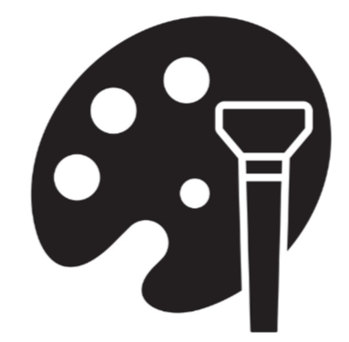

Plot&Trace

Plotter
Fill values as per your requirement!
Select Algorithm
Breadth First Search
Depth First Search
A* Search
Iterative deepening search
{ 1: [2, 3], 2: [1, 3, 4], 3: [1, 2, 5], 4: [2, 5], 5: [3, 4] }
Use example
Use image
Plot It!
•
Viewer
Use amazon aws simple; Use computer vision-image to graph;
Reset
Trace